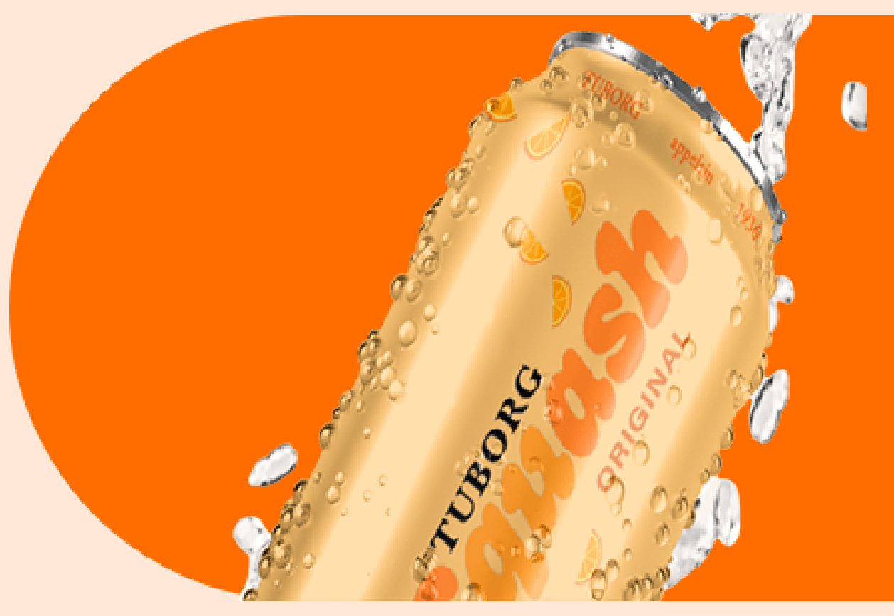
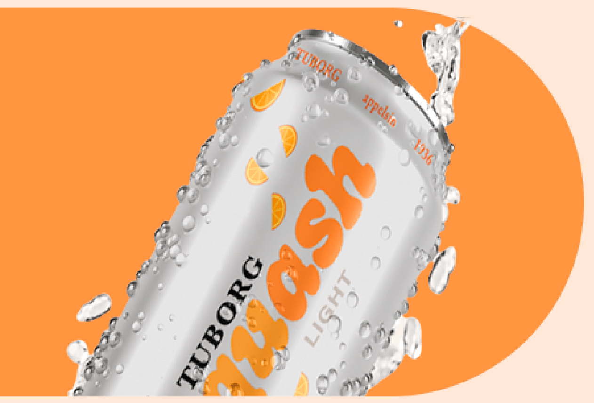

Smagsvarianter
Se vores udvalg af Tuborg Squash med vores helt nye moderne design. Find dem i butikkerne nu!

Squash ORIGINAL

Squash LIGHT

Squash LIGHT
"Tuborg Squash smager, som en god dansk appelsinvand skal smage."
Indhold
Vand, sukker, appelsinsaft (5,8%), kuldioxid, syre (citronsyre), konserveringsmiddel (E202), appelsinolier, gulerodssaft, antioxidant (ascorbinsyre), stabilisator (johannesbrødkernemel).